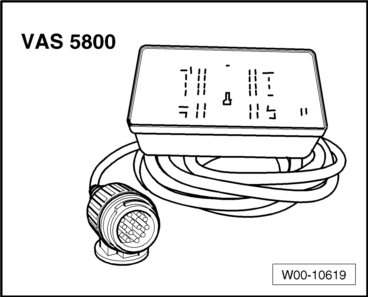
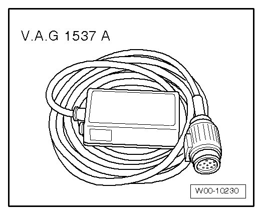

Electrical Equipment
Special Tools
Special tools, testers and auxiliary items required
• Vehicle Diagnostic, Testing and Information System (VAS 5051A)

• Diagnostic cable (VAS 5051/6A)
• Trailer socket tester (VAS 5800)

• Power outlet tester (V.A.G 1537/A)*
